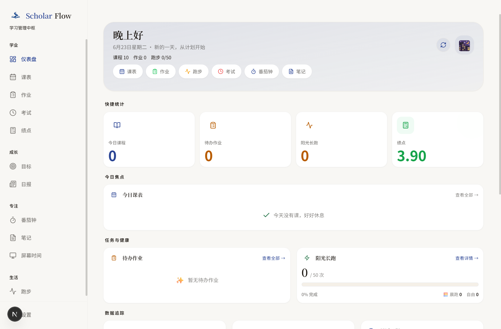
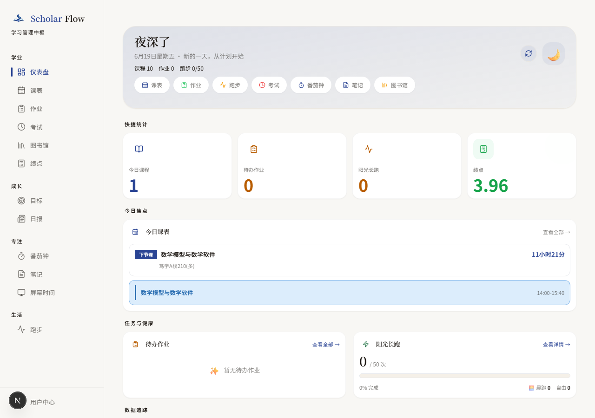

本地优先的 校园学习 工作台
将教务系统、图书馆服务与个人学习工具深度融合。课表、成绩、考试、作业、笔记、番茄钟、AI 助手——一个 Windows 桌面应用，覆盖你的全部校园学习流程。

下节课程
高等数学 @ 3-201
今日专注
4 小时 32 分钟
不只是工具，是完整的 学习闭环
从课表到作业，从专注到复盘，每个环节都围绕真实校园场景设计，不再在十个应用之间切来切去。
仪表盘
课表、作业、考试倒计时、通知、日报一屏掌握，每天打开就知道该做什么。
智能课表
今日视图、本周网格、日期查询、学期周次自动计算，支持调课与单次取消。
作业管理
快速新增、列表管理、完成状态一键追踪，DDL 再也不会被遗忘。
成绩 / GPA
教务同步、绩点展示、按学期查看成绩趋势，学习成果一目了然。
番茄钟
专注 / 休息循环计时，助你进入心流，把大任务拆成可控的专注单元。
Markdown 笔记
Markdown 编辑器、全文搜索、自动保存，课堂笔记和复习资料井井有条。
AI 学习助手
基于 DeepSeek 的周报生成与学习数据智能总结，让 AI 成为你的学习搭档。
屏幕时间
秒级前台窗口检测，90+ 应用识别规则，支持 CSV 导出，看清时间都去哪了。
为 Windows 桌面 原生打造
Electron 加持下的 Windows 桌面应用，系统级安全存储、后台自动刷新、活动窗口统计、自动更新，网页版做不到的事，这里都能做。
Windows 桌面端 · 完整能力
Electron 加持下的原生体验：系统级安全存储、后台自动刷新、活动窗口统计、自动更新。把教务数据、图书馆服务和个人学习工具，收束到一个属于你自己的 Windows 应用中。

Windows 桌面端能力
专为 Windows 设计的原生桌面应用，完整能力一览。
| 能力 |
Windows 桌面端
|
|---|---|
| 课表 / 成绩 / 考试同步 | 完整支持 |
| 作业 / 目标 / 番茄钟 / 笔记 | 完整支持 |
| 本地安全加密存储 | 系统级 |
| AI 学习助手（周报生成） | 完整支持 |
| 活动窗口统计 | 完整支持 |
| 后台自动刷新 | 完整支持 |
你的数据，
只属于你
ScholarFlow 不是爬虫，也不经营你的数据。它用你自己的学号密码通过学校官方 API 登录，只获取你自己的数据。账号密码 AES-256-GCM 加密存储，学习数据默认落在本地 SQLite。